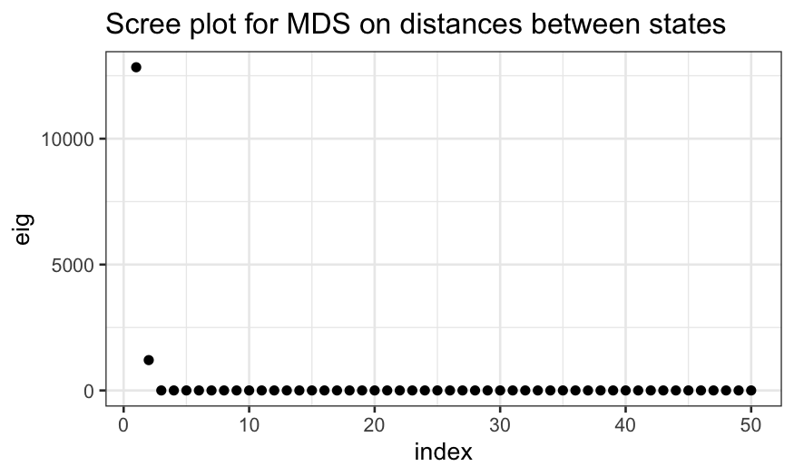
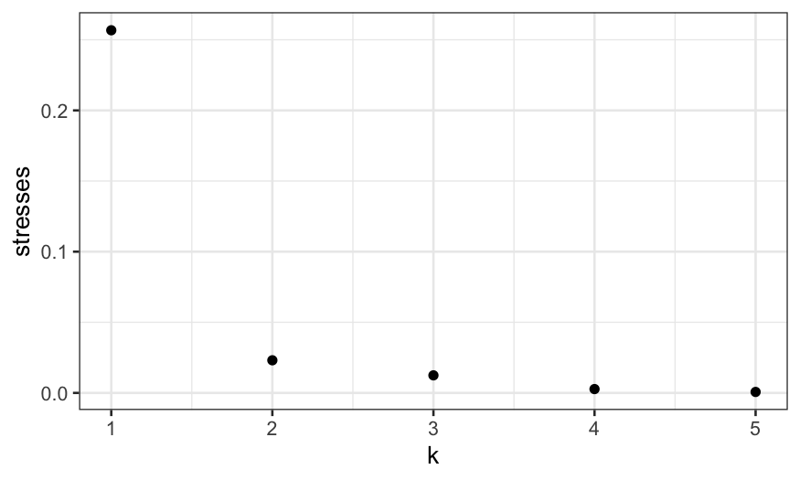
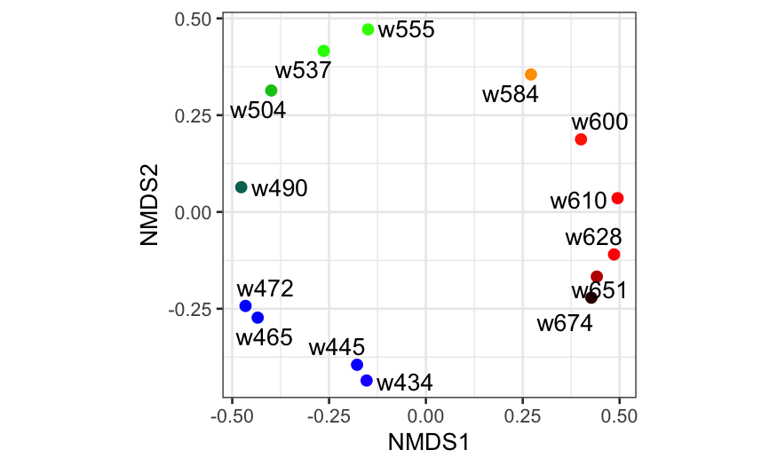

Stat 470/670 Lecture 25: Ordered and unordered categorical responses
Julia Fukuyama
November 13, 2018
Ordered categorical responses: polr()
Optional reading: Gelman & Hill pp. 119--123.
With categorical regression, the main distinction is between models with ordered categories and models with unordered categories. Let's start with the ordered case.
Fake data: Grad school
Let's use the (simulated) data on the potential grad school application of college students at
http://stats.idre.ucla.edu/r/dae/ordinal-logistic-regression/
The data purports to be for 400 juniors asked how likely they are to apply to grad school.
The variables:
apply gives a student's intention to apply to grad school, where 0 means unlikely, 1 means somewhat likely, and 2 means very likely.
paredis a binary variable indicating whether the parent has a graduate degree.
public is a binary variable indicating whether the student goes to a public college.
gpais the student's GPA.
We want to model how the likelihood of applying to grad school depends on the other factors.
Notice that apply is an ordered categorical variable.
We'll read in the Stata data using import() in the rio package:
library(rio)
gradschool = import("https://stats.idre.ucla.edu/stat/data/ologit.dta")
summary(gradschool)
## apply pared public gpa
## Min. :0.00 Min. :0.0000 Min. :0.0000 Min. :1.900
## 1st Qu.:0.00 1st Qu.:0.0000 1st Qu.:0.0000 1st Qu.:2.720
## Median :0.00 Median :0.0000 Median :0.0000 Median :2.990
## Mean :0.55 Mean :0.1575 Mean :0.1425 Mean :2.999
## 3rd Qu.:1.00 3rd Qu.:0.0000 3rd Qu.:0.0000 3rd Qu.:3.270
## Max. :2.00 Max. :1.0000 Max. :1.0000 Max. :4.000
library(dplyr)
gradschool$Likelihood = recode_factor(gradschool$apply,
"0" = "unlikely", "1" = "somewhat likely", "2" = "very likely",
## when we do .ordered = TRUE we create an ordered factor,
## which makes the default versions of some plots nicer.
.ordered = TRUE)
For a preliminary model, we'll use gpa as our initial explanatory variable. Let's draw a jittered plot showing the relationship between gpa and likelihood of applying to grad school.
ggplot(gradschool, aes(x = gpa, y = Likelihood, color = Likelihood)) +
geom_jitter(width = 0, height = 0.2) + ggtitle("Likelihood of applying to grad school")
Most students are unlikely to apply to grad school. However, a higher GPA does mean a student is more likely to apply.
It's easy to get a sense of the conditional distribution of gpa given Likelihood. What we want, however, is the conditional distribution of Likelihood given gpa. We can get at this by discretizing gpa, drawing a histogram, then coloring it by the levels of Likelihood:
ggplot(gradschool, aes(x = gpa, fill = Likelihood)) +
geom_histogram(breaks = seq(1.8, 4, 0.2)) +
ggtitle("Likelihood of applying to grad school")
Discretizing is arbitrary. If you prefer smooth estimates at the cost of some transparency, you can use stacked density estimates instead:
ggplot(gradschool, aes(x = gpa, ..count.., fill = Likelihood)) +
geom_density(position = "stack") +
ggtitle("Likelihood of applying to grad school")
The y-axis scale is a bit confusing here, since it's neither a true density nor a count. Instead, the total area is scaled to be equal to the number of observations (400.)
One question these graph don't answer directly: for a given GPA, what proportions of students are unlikely, somewhat likely, and very likely to apply to grad school?
Here, instead of joint probabilities, we want conditional probabilities (conditional on GPA and possibly other variables.)
We can use position = "fill" to plot conditional density estimates:
ggplot(gradschool, aes(x = gpa, ..count.., fill = Likelihood)) +
geom_density(position = "fill") +
ggtitle("Likelihood of applying to grad school")
Modeling ordinal responses
What if we'd prefer to fit a model? The option we'll pursue is proportional odds logistic regression, fitted in R using the polr() function in MASS.
Let's first fit the model, then explain what it means.
library(MASS)
gpa.polr = polr(Likelihood ~ gpa, data = gradschool)
library(arm)
display(gpa.polr)
## polr(formula = Likelihood ~ gpa, data = gradschool)
## coef.est coef.se
## gpa 0.72 0.25
## unlikely|somewhat likely 2.37 0.76
## somewhat likely|very likely 4.40 0.78
## ---
## n = 400, k = 3 (including 2 intercepts)
## residual deviance = 732.6, null deviance is not computed by polr
The model gives us both a linear predictor (on a logit scale) and cutpoints.
The linear predictor is \[
0.72 \times \textrm{GPA}
\] (Note that the form of the model fitted by polr() has no intercept.)
The cutpoints correspond to boundaries between groups: the boundary between group 0 (unlikely) and group 1 (somewhat likely) is 2.37, while the boundary between group 1 and group 2 (very likely) is 4.4 (found in gpa.polr$zeta).
To get deterministic predictions, we compare the linear predictor to the cutpoints. So if a student has a GPA of 3.5, our linear predictor would be \(.72 \times 3.5 = 2.52\). Since this is above the cutoff between the "unlikely" and "somewhat likely" groups but below the cutoff between the "somewhat likely" and "very likely", so our prediction for someone with a 3.5 GPA is that they are "somewhat likely" to apply to grad school.
polr() and probability
Deterministic predictions are the analog of the maximum likelihood predictions in logistic regression. But just as in logistic regression, we can also get fitted probabilities of all the possible categories for any observation.
According to the proportional odds logistic regression model, if we have an observation with predictor \(x\), a coefficient \(\beta\), and cutpoints between the categories, the probability that the response variable falls in category \(i\) are \[
P(x \beta + \epsilon \in [z_i, z_{i+1}])
\] if \(\epsilon\) is a random variable with a standard logistic distribution and \(z_i\) and \(z_{i+1}\) are the cutpoints corresponding to the upper and lower boundaries for category \(i\).
Because we might not be used to the logistic distribution, let's first use simulation to estimate the distribution of the latent variable for a person with a 3.5 GPA.
To find this probability in the model we fit above, we would:
Find the linear predictor based on their GPA;
Add random logistic noise;
Compare this "latent" variable to the cutpoints;
Repeat lots of times and compute the fraction of times the latent variable fell into each of the categories.
Their linear predictor is \(0.725 \times 3.5 = 2.54\). We add logistic noise and see how often they fall in each cutpoint range.
prediction = coefficients(gpa.polr) * 3.5
latent = prediction + rlogis(10000)
ggplot(as.data.frame(latent), aes(x = latent)) + geom_density() +
geom_vline(xintercept = gpa.polr$zeta, color = "red")

We see that the left and middle areas are bigger than the right area. This means that "unlikely" and "somewhat likely" are more probable than "very likely."
We can also find the fraction of times the latent variables fall in each range:
## what fraction of the time did the latent variables fall below the cutoff for "unlikely"
mean(latent <= 2.3748)
## [1] 0.4649
## what fraction of the time did the latent variables fall between
## the cutoff values corresponding to the "somewhat likely" category?
mean(latent > 2.3748 & latent <= 4.3998)
## [1] 0.3945
## what fraction of the time did the latent variables fall above the
## cutoff for "very likely"?
mean(latent > 4.3998)
## [1] 0.1406
So that we can compare with the predictions in the model later, let's find the exact probabilities. The probability of being "unlikely" is
\[
P(\beta x + \epsilon < z_{unlikely|somewhat})
\]
where \(x\) is GPA, \(\epsilon\) is standard logistic noise, and \(z_{unlikely|somewhat}\) is the lower cutpoint. This is the same as
\[
P(\epsilon < z_{unlikely|somewhat} - \beta x)
\]
i.e., the probabilistic a standard logistic random variable is less than \(z_{unlikely|somewhat} - \beta x\).
We find logistic probabilities using the inv.logit() function in boot.
beta = coefficients(gpa.polr)
zeta = gpa.polr$zeta
library(boot)
inv.logit(zeta[1] - beta * 3.5)
## unlikely|somewhat likely
## 0.4595418
There's a 46% chance a person with a 3.5 GPA is "unlikely" to apply to grad school. Similarly, the probability they're "very likely" to apply to grad school is the probability a standard logistic random variable is greater than the difference between the second cutpoint and the linear predictor:
1 - inv.logit(zeta[2] - beta * 3.5)
## somewhat likely|very likely
## 0.1343714
There's a 13% chance they're "very likely." That leaves a 41% chance they're "somewhat likely."
Now that we know what we're doing, we can just get these probabilities using predict():
predict(gpa.polr, newdata=data.frame(gpa=3.5), type = "probs")
## unlikely somewhat likely very likely
## 0.4595418 0.4060868 0.1343714
Graphing and checking the model
Let's display the fit as a function of GPA.
gpa = seq(min(gradschool$gpa), max(gradschool$gpa), 0.01)
grad.probs = predict(gpa.polr, newdata = data.frame(gpa), type = "prob")
grad.probs.df = data.frame(gpa, grad.probs)
names(grad.probs.df) = c("GPA", "Unlikely", "Somewhat Likely", "Very Likely")
library(tidyr)
grad.probs.long = grad.probs.df %>% gather(Likelihood, Probability, 2:4)
grad.probs.long$Likelihood = factor(grad.probs.long$Likelihood, levels = c("Unlikely", "Somewhat Likely", "Very Likely"), ordered = TRUE)
ggplot(grad.probs.long, aes(x = GPA, y = Probability, group = Likelihood, color = Likelihood)) +
geom_line() +
ggtitle("Likelihood of applying to grad school")
The probability of both "somewhat likely" and "very likely" increase with GPA, though "very likely" never gets very high.
We can also stack the lines and use areas:
ggplot(grad.probs.long, aes(x = GPA, y = Probability, group = Likelihood, fill = Likelihood)) +
geom_area() +
ggtitle("Likelihood of applying to grad school")

To check the fit, we could check every category separately. Instead we'll return to using apply as a quantitative variable: 0 for unlikely, 1 for somewhat likely, and 2 for very likely. That allows us to find means.
apply.fitted = fitted.values(gpa.polr)[,2] + 2 * fitted.values(gpa.polr)[,3]
apply.resid = gradschool$apply - apply.fitted
gpa.polr.df = data.frame(gradschool, .fitted = apply.fitted, .resid = apply.resid)
# Sort
gpa.polr.df = gpa.polr.df[order(gradschool$gpa),]
gg = ggplot(gpa.polr.df, aes(x = gpa, y = apply)) + geom_jitter(width = 0, height = 0.2, aes(color = Likelihood)) + geom_line(aes(x = gpa, y = .fitted))
gg + ggtitle("Likelihood of applying to grad school") + scale_color_manual(values = nice.palette)
## Error in f(...): object 'nice.palette' not found

Now look at the residuals:
gg = ggplot(gpa.polr.df, aes(x = gpa, y = .resid)) + geom_point()
gg + geom_smooth(method.args = list(degree = 1))
## `geom_smooth()` using method = 'loess' and formula 'y ~ x'
This looks fine -- there's a kink for GPAs below 2.25, but that could just be because there are few people with GPAs that low.
Multiple predictors
Let's now include two other variables in the model: pared is a binary variable indicating whether a parent has a grad degree, and public is a binary variable indicating whether the student goes to a public college.
grad.polr = polr(Likelihood ~ gpa + pared + public, data = gradschool)
display(grad.polr)
##
## Re-fitting to get Hessian
## polr(formula = Likelihood ~ gpa + pared + public, data = gradschool)
## coef.est coef.se
## gpa 0.62 0.26
## pared 1.05 0.27
## public -0.06 0.30
## unlikely|somewhat likely 2.20 0.78
## somewhat likely|very likely 4.30 0.80
## ---
## n = 400, k = 5 (including 2 intercepts)
## residual deviance = 717.0, null deviance is not computed by polr
The deviance has gone down by about 16 and the coefficients are in the direction in you'd expect -- your parents going to grad school means it's more probable you'll go to grad school, while going to a public college means it's slightly less probable.
As for numerical responses, we can study the fit by using expand.grid() to get a data frame of explanatories and making predictions.
grad.grid = expand.grid(gpa = seq(min(gradschool$gpa), max(gradschool$gpa), 0.01), pared = 0:1, public = 0:1)
grad.predict = as.data.frame(predict(grad.polr, newdata = grad.grid, type = "probs"))
grad.polr.df = data.frame(grad.grid, grad.predict)
names(grad.polr.df) = c("gpa", "pared", "public", "Unlikely", "Somewhat Likely", "Very Likely")
We'll append a new variable that gives the combination of pared and public.
pared_descriptive = recode(grad.polr.df$pared, "0" = "No grad parent", "1" = "Grad parent")
public_descriptive = recode(grad.polr.df$public, "0" = "private college", "1" = "public college")
grad.polr.df$Group = factor(paste(pared_descriptive, public_descriptive, sep = ", "))
head(grad.polr.df)
## gpa pared public Unlikely Somewhat Likely Very Likely
## 1 1.90 0 0 0.7376186 0.2204577 0.04192370
## 2 1.91 0 0 0.7364248 0.2214034 0.04217180
## 3 1.92 0 0 0.7352275 0.2223512 0.04242130
## 4 1.93 0 0 0.7340267 0.2233011 0.04267221
## 5 1.94 0 0 0.7328225 0.2242530 0.04292454
## 6 1.95 0 0 0.7316148 0.2252070 0.04317830
## Group
## 1 No grad parent, private college
## 2 No grad parent, private college
## 3 No grad parent, private college
## 4 No grad parent, private college
## 5 No grad parent, private college
## 6 No grad parent, private college
There are a few ways to view this data frame, but probably the clearest is to draw a panel for each category.
grad.polr.long = grad.polr.df %>% gather(Likelihood, Probability, `Unlikely`:`Very Likely`)
grad.polr.long$Likelihood = factor(grad.polr.long$Likelihood, levels = c("Unlikely", "Somewhat Likely", "Very Likely"), ordered = TRUE)
ggplot(grad.polr.long, aes(x = gpa, y = Probability, group = Group, color = Group)) + geom_line() + facet_grid(~Likelihood) + ggtitle("Likelihood of applying to grad school")
We see that private or public college makes almost no difference, so we should consider dropping that from the model.
Unordered categorial responses: Alligator food
Optional reading: Agresti, Categorical Data Analysis, section 8.1 (3rd edition pp. 294--297.)
What do alligators like to eat? Researcher captured 219 alligators in four Florida lakes, and categorized them by the primary contents of their stomach.
The variables they collected were:
lake gives the lake where the alligator was captured;
sex is male or female;
size is small or large;
food is fish, invertebrate, reptile, bird, or other;
count is how many of the 219 alligators had that combination of lake, sex, size, and food.
alligator = read.table("../../datasets/alligator.txt", header = TRUE)
summary(alligator)
## lake sex size food count
## George :20 female:40 large:40 bird :16 Min. : 0.000
## Hancock :20 male :40 small:40 fish :16 1st Qu.: 0.000
## Oklawaha:20 invert :16 Median : 1.000
## Trafford:20 other :16 Mean : 2.737
## reptile:16 3rd Qu.: 3.250
## Max. :16.000
Check that there are \(4 \times 2 \times 2 \times 5 = 80\) (lakes times sex times size times food) rows:
nrow(alligator)
## [1] 80
Check that there are 219 alligators:
sum(alligator$count)
## [1] 219
One issue with categorical data is that different R function often require the data to be in different formats. To get it over with, let's put the data in wide form. This will also let us print out a table with fewer rows that gives all the data.
## The first argument to spread tells the function what variable
## you want to spread over the columns (food in this case)
## The second argument to spread tells the function what variable
## should go in the cells, in this case it is count
alligator.wide = alligator %>% spread(food, count)
alligator.wide
## lake sex size bird fish invert other reptile
## 1 George female large 0 8 1 1 0
## 2 George female small 0 3 9 1 1
## 3 George male large 1 9 0 2 0
## 4 George male small 2 13 10 2 0
## 5 Hancock female large 2 3 0 3 1
## 6 Hancock female small 2 16 3 3 2
## 7 Hancock male large 1 4 0 2 0
## 8 Hancock male small 0 7 1 5 0
## 9 Oklawaha female large 1 0 1 0 0
## 10 Oklawaha female small 0 3 9 2 1
## 11 Oklawaha male large 0 13 7 0 6
## 12 Oklawaha male small 0 2 2 1 0
## 13 Trafford female large 0 0 1 0 0
## 14 Trafford female small 1 2 4 4 1
## 15 Trafford male large 3 8 6 5 6
## 16 Trafford male small 0 3 7 1 1
Just by looking at the numbers we see that fish are relatively popular, while birds and reptiles are unpopular. Our eventual goal will be to build a model that gives the probability an alligator prefers each type of food, based on the predictors we have.
Mosaic plots
As in the previous lecture, we can make mosaic plots describing the variables.
Last time we used moisaic in vcd, but there is also geom_mosaic in the ggmosaic package, and we'll use that function this time.
ggmosaic requires the data in "product" format (easily achieved with the product() function) and a weight variable. Here our weights are the counts of alligators in each combination of categories. Let's first draw a mosaic plot breaking up the total sample of alligators by lake and food.
# install.packages('ggmosaic')
library(ggmosaic)
ggplot(alligator) +
geom_mosaic(aes(product(food, lake), weight = count, fill = food)) +
xlab("Lake") + ylab("Proportion of gators at that lake")
The above plot shows us the conditional distribution of each type of food, given the lake, as well as the joint relative frequency of each lake/food combination. The preferred types of food do seem to differ a lot by lake.
We can also look at the other pairs of variables: food/size and food/sex.
ggplot(alligator) +
geom_mosaic(aes(product(food, size), weight = count, fill = food)) + xlab("Alligator size")
ggplot(alligator) +
geom_mosaic(aes(product(food, sex), weight = count, fill = food)) + xlab("Sex")
We see that in the sample, there are more small gators than large ones, and more males than females. More importantly, the conditional distribution of food looks quite different between big and small gators, but quite similar comparing males and females.
We could keep on subdividing the bars in an attempt to look for interactions, but this is messy. Combining mosaics with faceting is preferable. In this case, because the data consists of a sample from each lake, it makes sense to facet by lake.
ggplot(alligator) +
geom_mosaic(aes(product(food, size), weight = count, fill = food)) +
facet_wrap(~lake, ncol=2, labeller = label_context) + xlab("Alligator size")
Multinomial regression
Let's fit a model using lake and size as predictors. For categorical responses, we want the conditional distribution given the predictors to be multinomial. I use the vglm() function (vector GLM) in package VGAM to fit multinomial regressions. The syntax is similar to that of glm() with family multinomial, except you need to specify a matrix of responses (one column for each category.) This can be done using cbind() with the data in wide format.
# install.packages('VGAM')
library(VGAM)
alligator.mlogit = vglm(cbind(bird, fish, invert, other, reptile) ~ lake + size,
family = multinomial, data = alligator.wide)
alligator.mlogit
##
## Call:
## vglm(formula = cbind(bird, fish, invert, other, reptile) ~ lake +
## size, family = multinomial, data = alligator.wide)
##
##
## Coefficients:
## (Intercept):1 (Intercept):2 (Intercept):3 (Intercept):4 lakeHancock:1
## 1.2214559 3.3145327 1.7655141 1.4102610 -0.5476591
## lakeHancock:2 lakeHancock:3 lakeHancock:4 lakeOklawaha:1 lakeOklawaha:2
## -1.2427766 -2.9011352 -0.4165804 -3.1120797 -2.4588720
## lakeOklawaha:3 lakeOklawaha:4 lakeTrafford:1 lakeTrafford:2 lakeTrafford:3
## -1.5216526 -2.4532189 -1.8474865 -2.9352533 -1.8132685
## lakeTrafford:4 sizesmall:1 sizesmall:2 sizesmall:3 sizesmall:4
## -1.4188846 -0.2793969 0.3512628 1.8094675 0.6828131
##
## Degrees of Freedom: 64 Total; 44 Residual
## Residual deviance: 52.47849
## Log-likelihood: -74.42948
##
## This is a multinomial logit model with 5 levels
There are lots of coefficients here! These can be interpreted in terms of log odds, but instead we'll examine the model fit graphically.
alligator.mlogit.df = data.frame(model.frame(alligator.mlogit), fitted.values(alligator.mlogit))
alligator.mlogit.long = alligator.mlogit.df %>% gather(food, probability, bird:reptile)
ggplot(alligator.mlogit.long, aes(x = food, y = probability)) + geom_point() +
facet_wrap(~lake + size, ncol = 4)
We could also collapse the large and small rows and color-code:
ggplot(alligator.mlogit.long, aes(x = food, y = probability, col = size)) +
geom_point() + facet_wrap(~ lake)
Let's check the deviance of a couple of alternatives:
deviance(vglm(cbind(bird, fish, invert, other, reptile) ~ lake + size + sex, family = multinomial, data = alligator.wide))
## [1] 50.26369
deviance(vglm(cbind(bird, fish, invert, other, reptile) ~ lake * size, family = multinomial, data = alligator.wide))
## [1] 35.39866
Adding sex only reduces deviance by a trivial amount (less than the 4 extra degrees of freedom), and so is unlikely to be worth it.
Adding an interaction between lake and size reduces deviance by a lot, but also makes the model much more complicated, so that's a judgment call.
Also note that when we add an interaction between categorical predictors, this is just equivalent to taking the raw proportions for each two-way combination of predictors. So we're back to the two-way faceted bar graph, only standardized so that each panel adds up to probability 1.
Quantitative predictors
We can also fit multinomial models with quantitative predictors. In the file gator2.txt, the numerical predictor is the length of the alligator in meters.
The two variables are:
Let's read in the data and fit a multinomial logit model:
gator2 = read.table("../../datasets/gator2.txt", header = TRUE)
summary(gator2)
## length food
## Min. :1.240 Fish :31
## 1st Qu.:1.575 Invertebrates:20
## Median :1.850 Other : 8
## Mean :2.130
## 3rd Qu.:2.450
## Max. :3.890
gator2.mlogit = vglm(food ~ length, family = multinomial, data = gator2)
gator2.mlogit
##
## Call:
## vglm(formula = food ~ length, family = multinomial, data = gator2)
##
##
## Coefficients:
## (Intercept):1 (Intercept):2 length:1 length:2
## 1.617731 5.697444 -0.110109 -2.465446
##
## Degrees of Freedom: 118 Total; 114 Residual
## Residual deviance: 98.34124
## Log-likelihood: -49.17062
##
## This is a multinomial logit model with 3 levels
As we did in the ordered categories case, let's start making predictions to understand the fit. First, on the linear predictor (i.e. transformed) scale:
log.ratios = predict(gator2.mlogit, newdata = data.frame(length = 2))
log.ratios
## log(mu[,1]/mu[,3]) log(mu[,2]/mu[,3])
## 1 1.397513 0.7665519
This gives us the log probability ratios for one type of food to another. The log of the probability ratio for fish to other is \(1.62 - 0.11 \times 2 \approx 1.4\) and for invertebrates to other is \(5.7 - 2.47 \times 2 \approx 0.77\). (Note that vglm() take the last level of the factor as the baseline, which is weird but is what it is.)
We can look at the predictions on the probabiliity scale, and then check that all of our numbers are consistent with each other.
twometerprobs = predict(gator2.mlogit, newdata = data.frame(length = 2), type = "response")
twometerprobs
## Fish Invertebrates Other
## 1 0.5620216 0.2990405 0.1389379
To go from the probability scale to the linear predictor scale:
## note that this is the same as log.ratios above
log(twometerprobs[1:2] / twometerprobs[3])
## [1] 1.3975134 0.7665519
To go from the linear predictor scale to the probability scale:
## this is the same as twometerprobs above
exp(c(log.ratios, 0)) / sum(exp(c(log.ratios, 0)))
## [1] 0.5620216 0.2990405 0.1389379
Now let's look at how these probabilities vary with length:
length = data.frame(length = seq(1.24, 3.89, 0.01))
gator2.pred = predict(gator2.mlogit, newdata = length, type = "response")
gator2.pred.df = data.frame(length, gator2.pred)
gator2.pred.long = gator2.pred.df %>% gather(food, probability, Fish:Other)
ggplot(gator2.pred.long, aes(x = length, y = probability, group = food, color = food)) +
geom_line() + ggtitle("What do alligators eat?")
Bigger alligators prefer fish and, to a lesser extend, "other." Smaller alligators prefer invertebrates.
We finally note that just as with the Poisson, multinomial data is often overdispersed, so be careful of taking standard errors literally.